GYEOP | Tableware
GYEOP is a contemporary tableware set inspired by Seoul's contrasting cityscape, where traditional low-rise houses coexist with towering modern buildings. Reinterpreting the traditional Korean footed dish through the idea of lifting and covering, GYEOP combines stackable cups and plates to create different heights and arrangements.
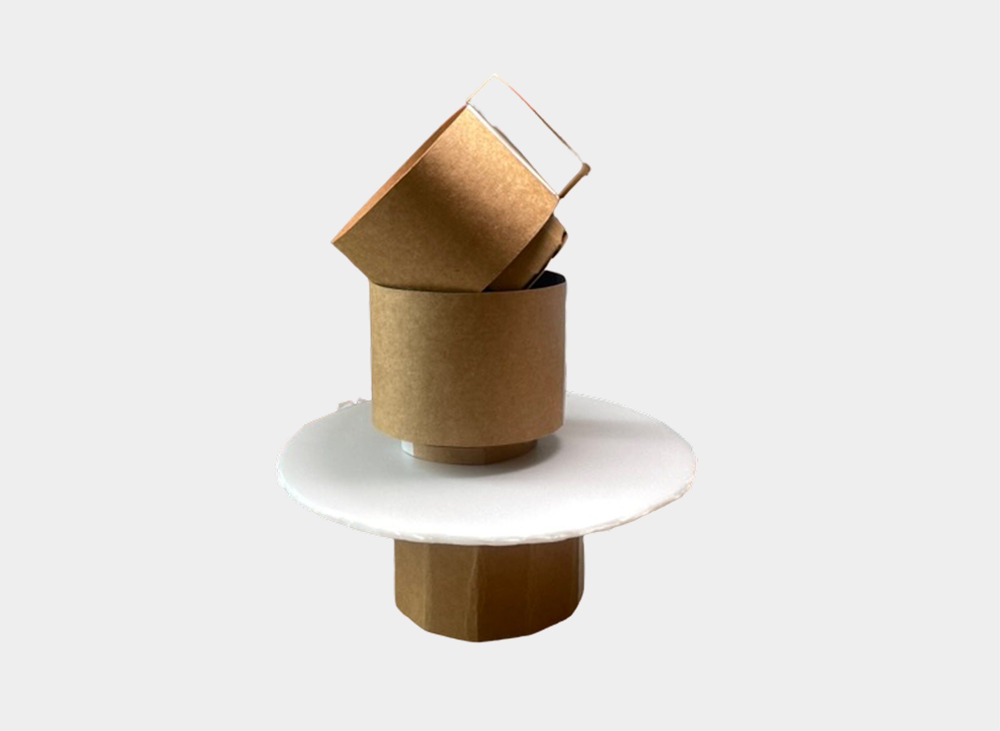
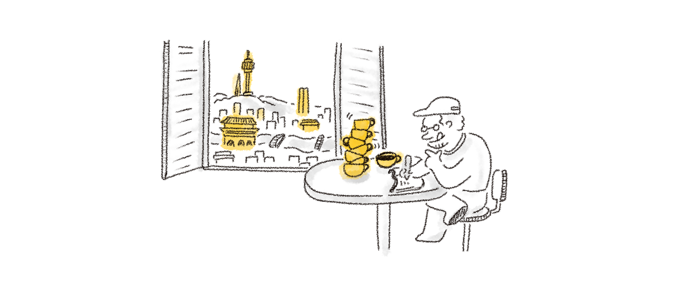
Seoul is a city where different times and ways of living exist side by side. Traditional hanok houses with low rooftops and towering modern buildings create a layered cityscape, each with its own height, form, and character. This contrast reveals a unique rhythm of old and new, where different architectural forms coexist within one landscape.
GYEOP takes inspiration from this layered cityscape and the thoughtful structure of traditional Korean footed dishes. Once used to elevate and cover food, their simple yet functional design is reinterpreted into contemporary tableware. By bringing together a cup and a plate as separate, stackable pieces, GYEOP explores new ways of lifting, covering, and arranging everyday objects.
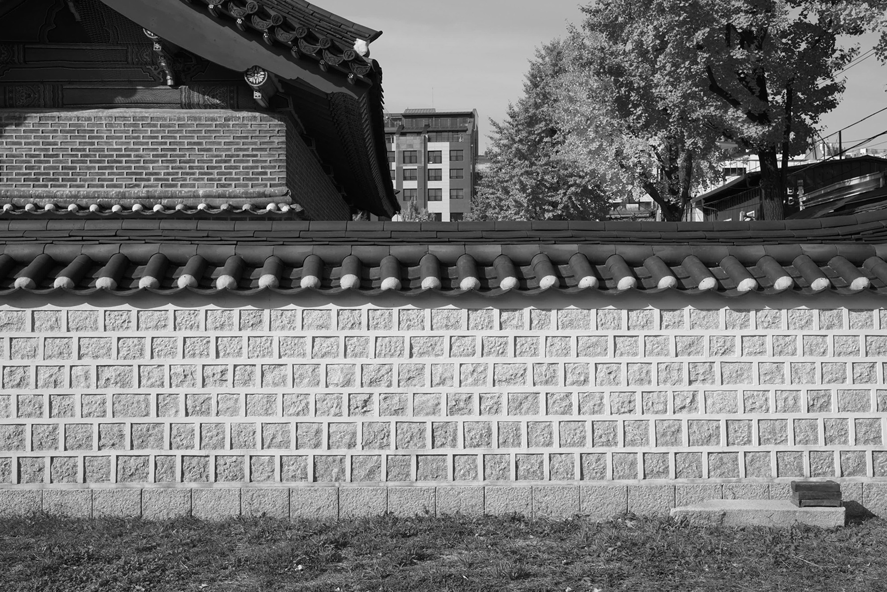
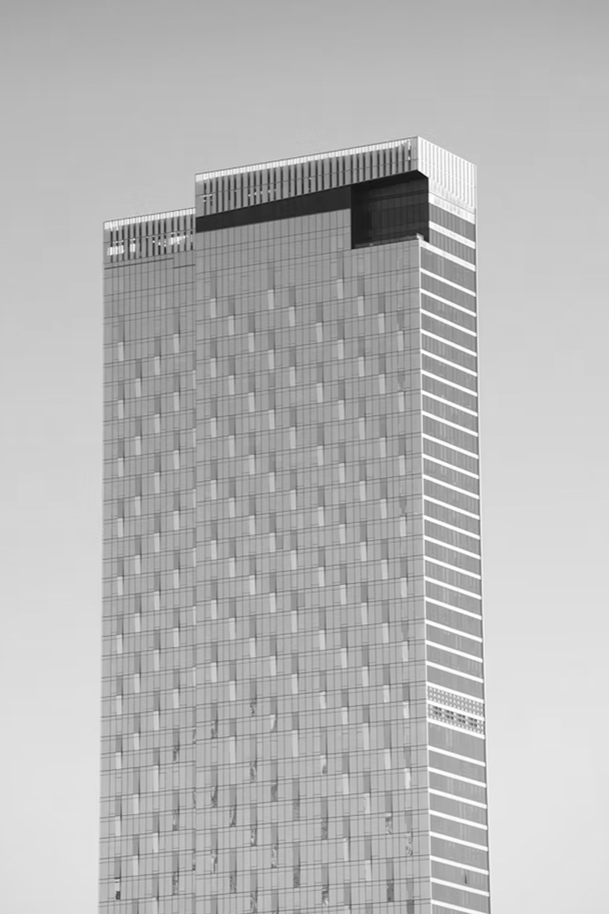
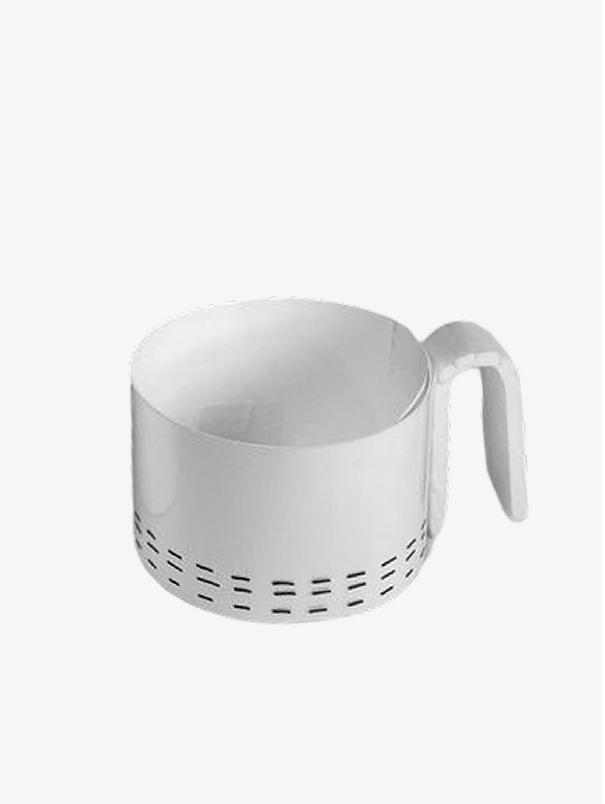
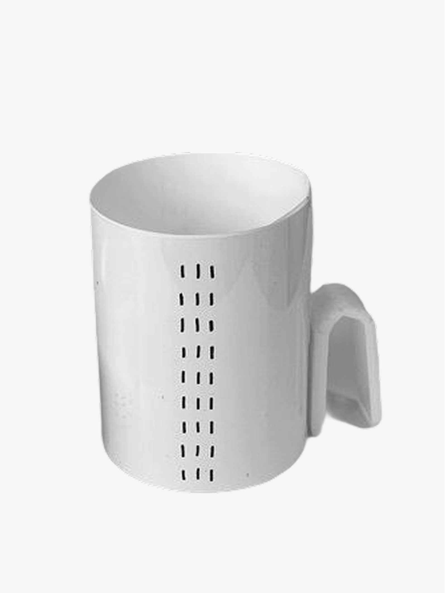
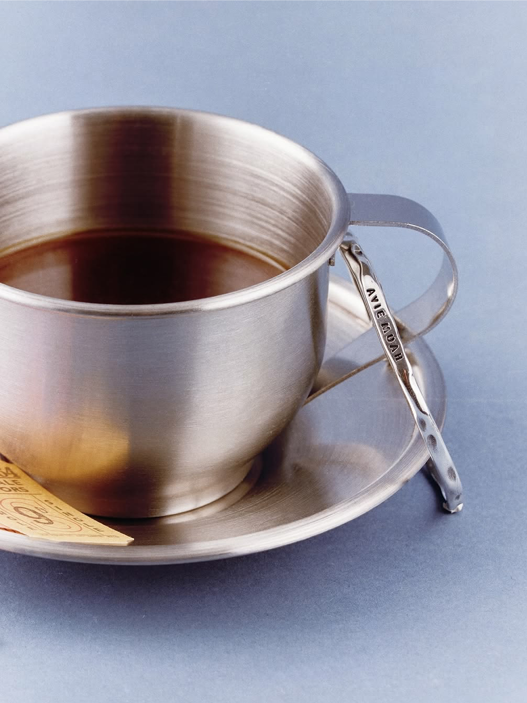
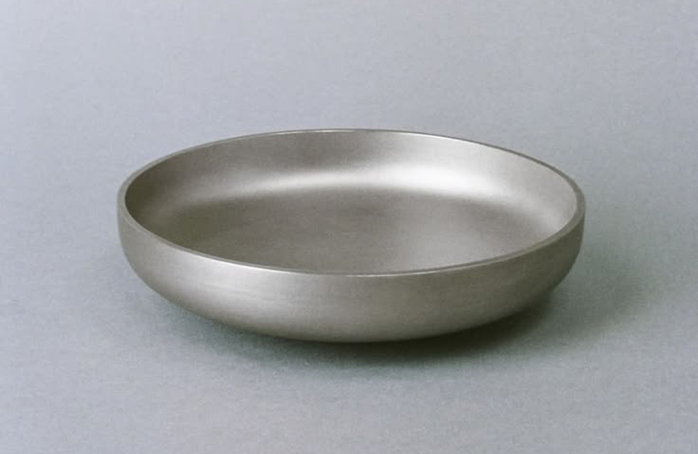
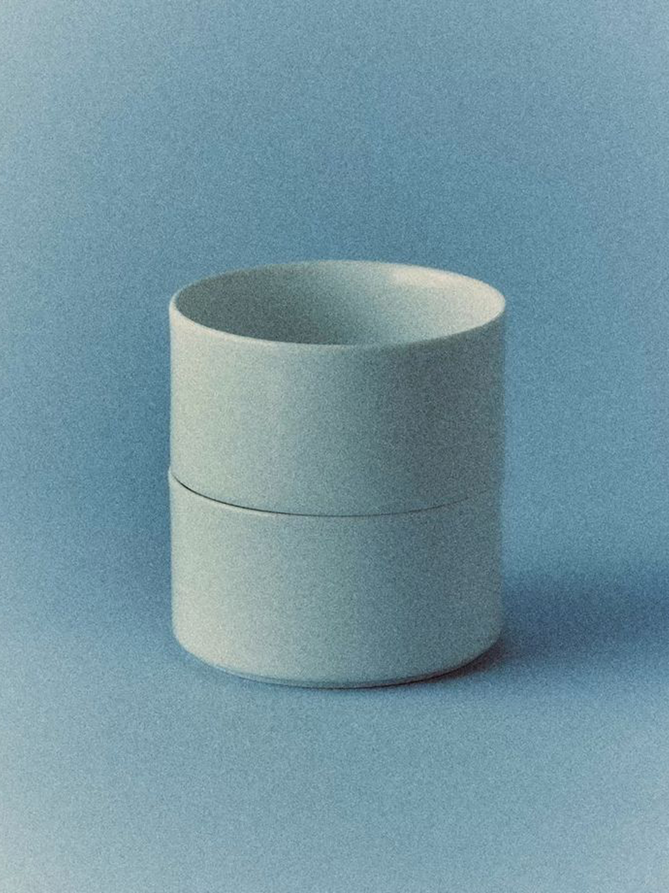
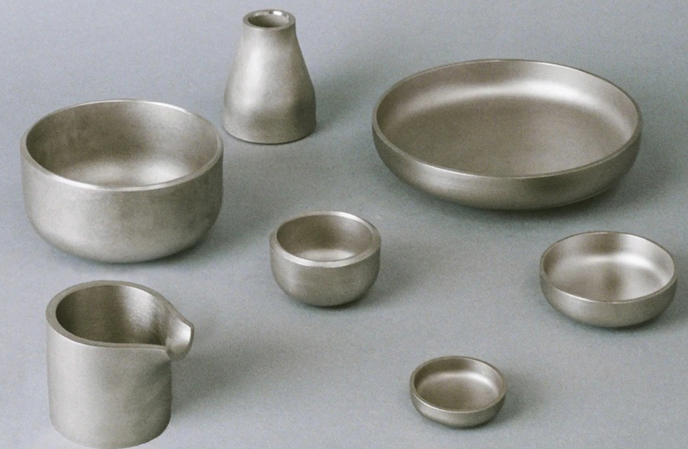
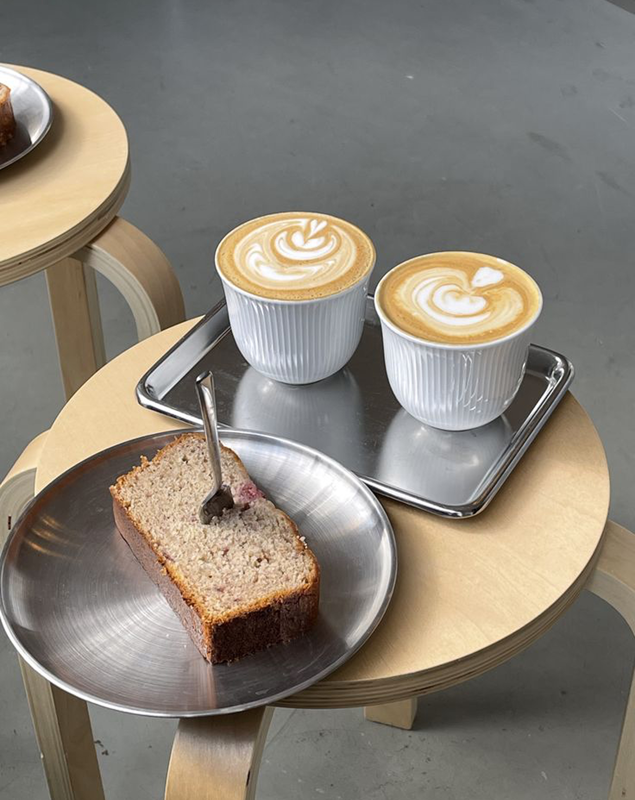
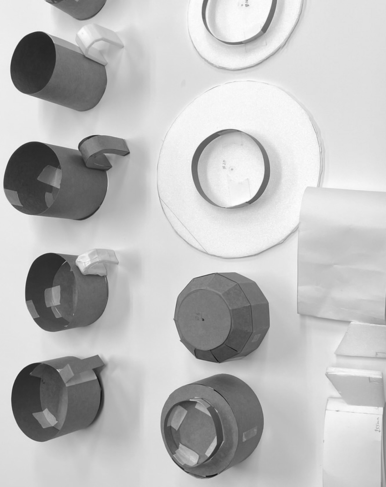
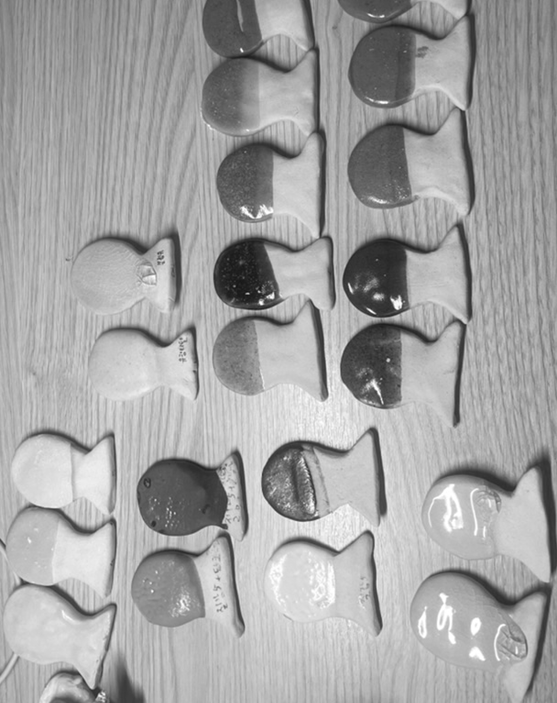
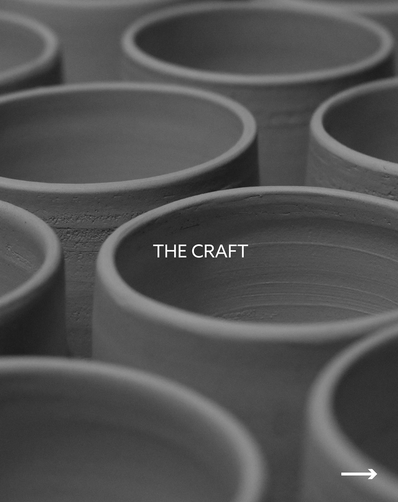
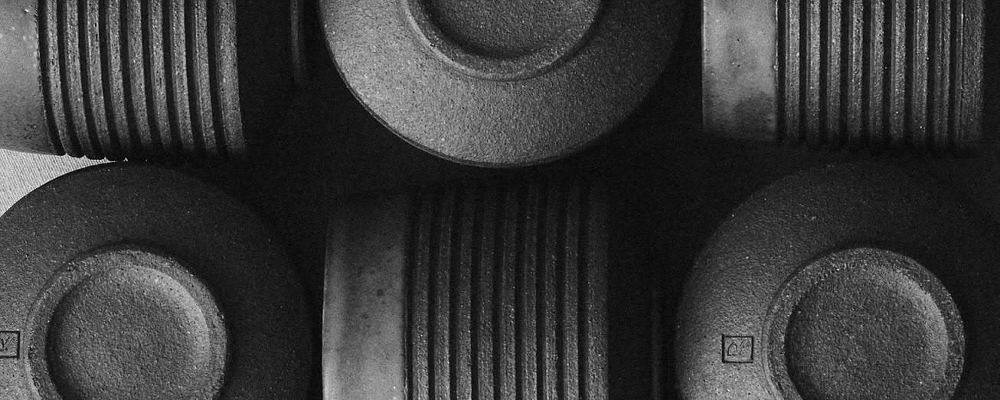